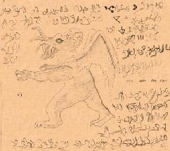

|
 agon was referred to as "Leader of ye Deep Ones", but he was not ye primary Water -Being worshiped. Indeed it was ye very son of Him whom Dagon and ye Deep Ones served. The wizards of ye sea-god cult called him Zoth-Ommog, ye Dweller in ye Deeps, one of ye 3 sons of Cthulhu who had been mighty gods in elder Mu before ye cataclysm destroyed that shadow- haunted and primal continent in prehistoric times. Early man had worshiped a pantheon of divinities that had come down from ye stars when ye Earth was young. These beings were essentially malign and had ruled man through fear, being more demons than gods; ye most common term for them was "ye Old Ones," and they were not even remotely human-like. They had some innate correspondences to ye four elements of earth, air, fire and water: for example, ye chief divinity, a winged, octopus-headed monstrosity named Cthulhu, was a sea-elemental; his half-brother, Hastur, was an air-elemental (and costantly at odds with Cthulhu); another, named Cthugha, was a fire-elemental, and so on. These were known as ye Great Old Ones, and subservient to them was a second group of minor entities called ye Lesser Old Ones, comprised of beings who served ye Great Old Ones as leaders of their minions or servants. For example, ye minions of Cthulhu were called ye Deep Ones, led by Father Dagon and Mother Hydra, and ye minions of Cthugha were ye so-called "Flame-Creatures," whose leader Fthaggua, dwelt on a world called Ktynga, while ye great air-elemental, Hastur, was served by ye Outer Ones, under their leader N'gha-Kthun. These beings were identified with ye famous Abominable Mi-Go. These Old Ones having warred against and been defeated by a superior, rival pantheon called ye Elder Gods, who either banished them to distant stars (as Cthugha to Fomalhaut and Hastur to Aldebaran), or imprisoned them at various places upon ye Earth. Cthulhu himself they locked away in a sunken stone city called R'lyeh beneath ye Pacific; his son Ghatanothoa they sealed within ye mountain on Mu, and his second son, Ythogtha, was imprisoned in a chasm in Yhe, a Muvian province, while Zoth-Ommog lay chained beneath ye ocean off ye "Island of ye Sacred Stone Cities." 
Cthulhu had fathered 3 godlings on a female entity named Idhyaa, who dwelt on or near ye "dim green double star, Xoth," in ye aeons before his descent to this planet. Thus ye materials relating to Cthulhu and his sons is sometimes called ye Xothic Legend-Cycle. As for ye twin leaders of this rebellion, Azathoth ye Demon-Sultan and
Ubbo-Sathla, the Unbegotten Source, they were reduced to idiocy by ye
Elder Gods, who thrust Azathoth beyond ye physical universe into primal
Chaos from which he can never return, while Ubbo-Sathla they confined
forever at ye subterranean place referred to only as "gray-litten Y'qaa,
beneath ancient Hyperborea. |
 f ye Old Ones and Elements
f ye Old Ones and Elements
 Of Ye Old Ones and ye
Gates Of Ye Old Ones and ye
Gates |
Old
Ones and Ancient Times  |